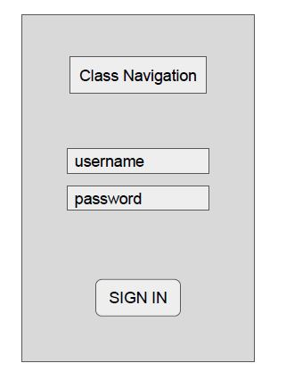
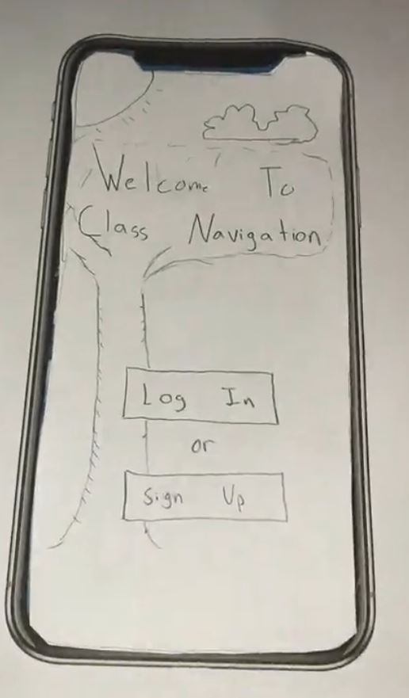

Problem Statement: Class Navigation

College students are often pressed for time and need a way to know when to promptly leave their dorms, the library, etc to arrive at their next class on time. Our solution would be to provide a way for users to be updated with times and best walking paths to arrive for their classes on time.
Affinity Diagram: Class Navigation

Our team is working together to come up with every possible idea for streamlining intra-class navigation for college students on campuses everywhere.
Personas: Five personas for Class Navigation

Personas for a typical user of our app.
Storyboards: Five Storyboards depicting uses of Class Navigation

How we see our app in use.
App Sketches:
Ideas of how the application could look.
Paper Prototype:
This is a paper prototype showing our app in use!